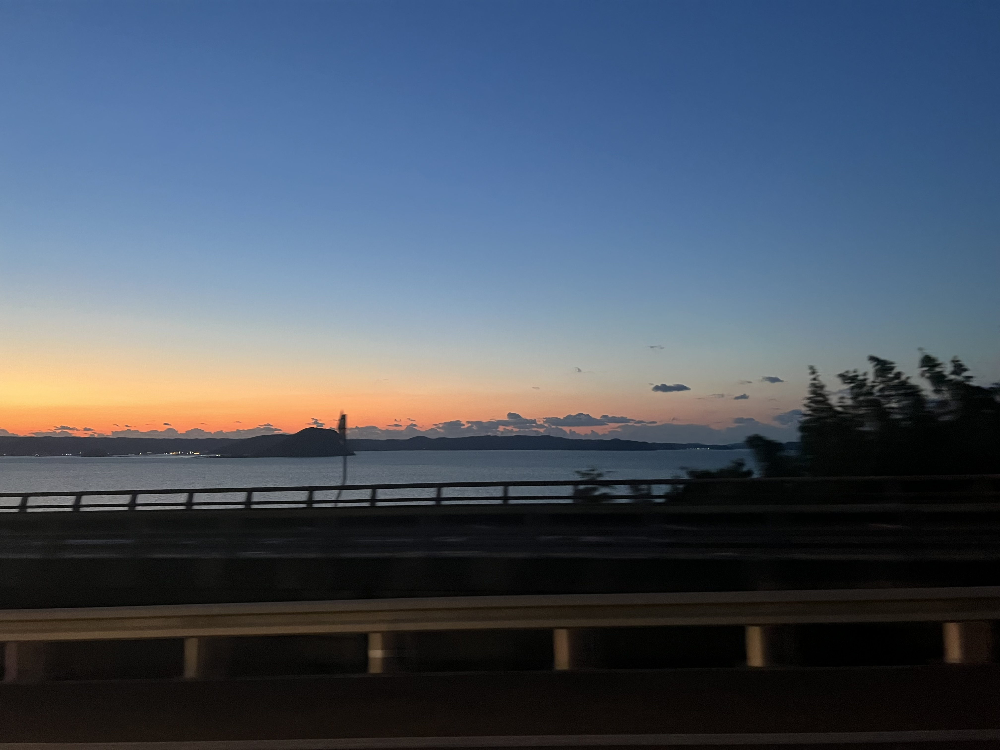
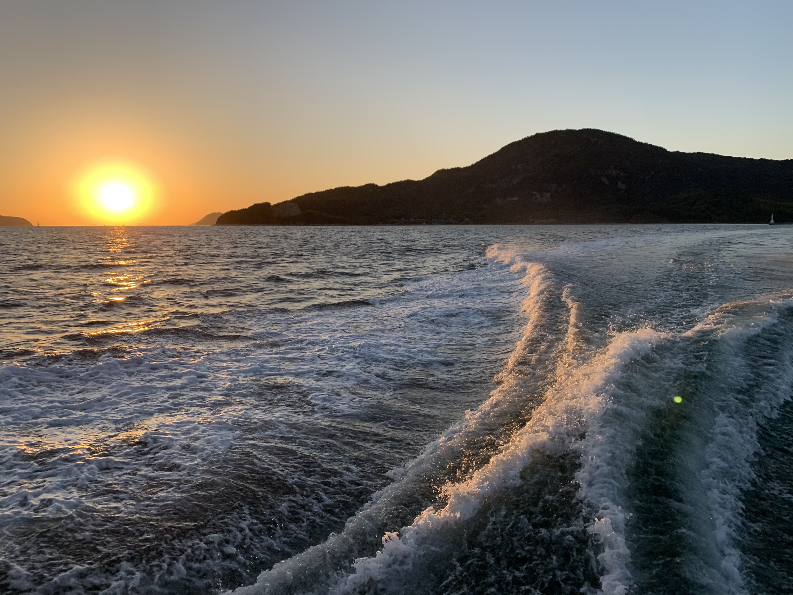

💡 自己紹介 (About Me)
名前: kuni
年齢: 18歳
DIYや一人旅をするのが好きです。遊園地などのアトラクション系ではなく自然豊かな場所が特に好きです。 高校まではバイクで日本全国旅してて、最近は車買ったので車で旅してます。 将来は、Pythonなどを勉強し、スマート農業で起業をしたいと考えています。
🛠️ スキルと目標 (Skills & Goals)
DIY・モノづくり
叔父と古民家を高校生時代にリフォームしていました。
学習中の技術
- Python：スマート農業のデータ分析、自動制御システム開発のために学習中。
- HTML/CSS：このポートフォリオを通じてWeb技術の基礎を習得。
将来の目標
スマート農業での起業。
DIYの知見とPythonによるデータ処理を組み合わせ、効率的で持続可能な農業システムを実現したい。
🏍️ 旅の記録 (Travel Log)
国内：バイクと車で巡る日本縦断
高校時代からの趣味。バイクでの単独全国旅を経て、現在は車で各地を巡り、日本の多様な自然や文化に触れるのが好きです。


海外
フランス、ベルギー、マレーシアへの渡航経験があり、海外の文化にも興味があり、世界一周とかしてみたいと考えています。